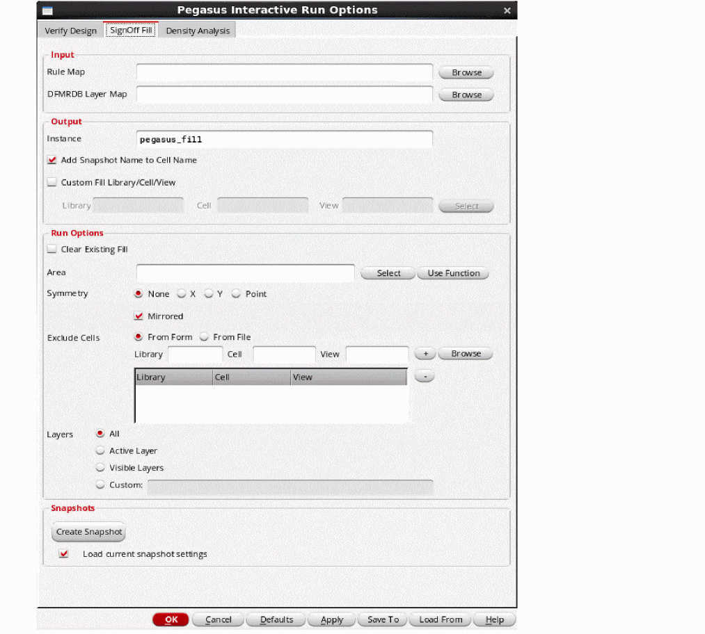
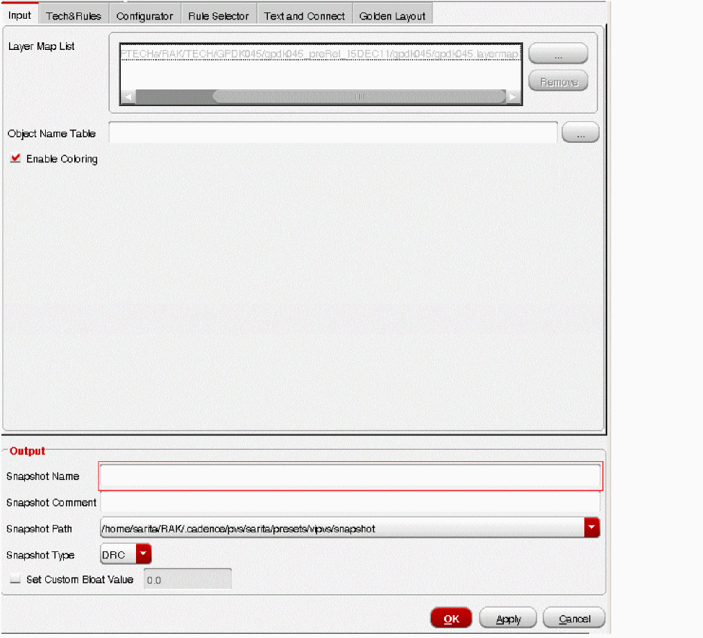
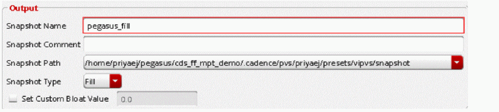

5
SignOff Fill: Snapshot
This chapter introduces you to the concept of SignOff fill and how to set up the form to run signoff fill. For the basics of Snapshot creation, see All about Design Rules: Snapshot.
The content of this chapter is organized as follows:
- Pegasus Interactive SignOff Fill Overview
- Technology Setup
- Creating Pegasus Interactive Fill Snapshot
Pegasus Interactive SignOff Fill Overview
Pegasus Interactive SignOff Fill allows you to generate dummy fills using foundry fill decks and automatically map generated dummy fills into Virtuoso OA database.
Traditional Fill Flow
Pegasus Interactive SignOff Fill Use Model
To reduce the number of iterations during cell/block development you can use the SignOff Fill feature to generate dummy fills inside block and therefore estimate timing impact of dummy fills at early development.
Pegasus Interactive SignOff Fill Features
- Support for qualified foundry fill deck.
- Generated fills immediately included into the block lib/cell/view. No need to manually merge generated fills with the design.
- Tight integration into Virtuoso Pegasus Interactive flow.
- Fill in area support.
- Incremental fill: fill design, modify design, and re-fill in the modified area.
- Blockages support:
Technology Setup
To backport the generated dummy fills into the OA technology layermap file, you must define the mapping between the fill layer and layer-purpose pair:
There must be proper mapping between the generated dummy fills in the foundry rule deck and the Virtuoso technology library. If there is no proper mapping, then the generated dummy fills will not be shown in Virtuoso.
Creating Pegasus Interactive Fill Snapshot
Pegasus SignOff Fill feature is snapshot-based, same as Pegasus Interactive Verify Design. For detailed description of fields in the Pegasus Interactive Snapshot Creator form, see All about Design Rules: Snapshot.
Perform the following steps to create Pegasus fill snapshot:
- Click the Pegasus Interactive Run Options icon on the Pegasus Interactive toolbar. The Pegasus Interactive Run Options form opens.
-
Select the SignOff Fill tab.
 -
Click Create Snapshot.
The Pegasus Interactive Snapshot Creator form opens.
For detailed description of the Pegasus Interactive Snapshot Creator form fields, see Pegasus Interactive Snapshot Creator Form. - Enter the required details in the form. The mandatory fields are rule file, layermap file and snapshot name.
-
In the Output section, enter the snapshot name and set Snapshot Type as Fill.
 -
Click OK to generate a snapshot and close the form. Then close the Pegasus Interactive Run Options form. The Pegasus Interactive toolbar shows
pegasus_fillsnapshot.
The Run Pegasus Interactive SignOff Fill icon on the left of snapshot name reflects that selected snapshot is type of Fill.
Return to top